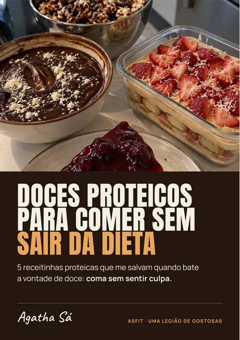

Grupo de Espera da Asfit
Grupo de Espera da Asfit
Tenha o seu treino, a sua dieta flexível e uma legião de gostosas do seu lado, tudo num app só.
O lançamento da Asfit é dia 11/11, na live oficial. Entre no Grupo de Espera e receba o link das inscrições antes de todo mundo.

Mô, estar sozinha faz qualquer mulher desistir da academia: até mesmo eu.
Foi por isso que eu criei a Asfit, um app de treino e dieta com comunidade. E agora ela tá voltando com app novo, cheio de coisa que nunca mais vai te deixar treinar sozinha.
-
Você nunca mais chega perdida na academia.
O seu treino já vem montado, com vídeo meu em cada exercício e a carga que você usou da última vez.
-
Quem te falou que pra ficar gostosa tem que passar fome?
Com a dieta flexível e o contador de calorias e de água, você come o que gosta sabendo quanto cabe no seu dia, sem depender de nutri ou do GPT.
-
E o mais importante: lá você nunca mais treina sozinha.
Tem feed com as meninas da legião treinando, amizade pra achar a sua parceira de treino e desafio com ranking e premiação.
E ainda tem lembrete de creatina e suplementação e calls em grupo comigo e com convidados especiais.
Entre gratuitamente no Grupo de Espera e ganhe de presente o meu kit com 3 manuais de receitas:

Imagem ilustrativa: os 3 manuais são em PDF.
Dentro do kit você vai receber:
- Suco Glow Up: 4 sucos pra inchaço, pele, digestão e sono.
- Os Chás da Semana: 5 chás pra imunidade, foco e sono.
- Doce sem Sair da Dieta: 5 doces proteicos pra comer sem culpa.
Se você gostar do que tem nesses manuais, eu te garanto que você vai gostar 10x mais do que eu vou liberar no dia 11/11, na live oficial de lançamento.
O kit vai estar no Grupo de Espera:
Entrar no Grupo de EsperaMô, a nova era da Asfit começa dia 11/11, na live oficial de lançamento.
E quem se inscrever mais rápido no dia da abertura vai ganhar bônus inéditos, como:
-
Bônus 1
Um treino gravado comigo
Se você for a primeira a se inscrever, vai treinar comigo, e esse treino vai ser gravado.
-
Bônus 2
Um Kit das Gostosas
Se você estiver entre as primeiras inscritas, recebe em casa o kit com creatina, garrafa, cropped da Asfit, pulseira de olho grego e muito mais.
-
Bônus 3
Bônus secretos
Esses eu só vou revelar no dia 11/11, na live oficial de lançamento.
Isso sem falar no preço promocional de lançamento e no tempo de acesso aumentado, uma condição que talvez eu nunca mais ofereça de novo.
Pra receber o link das inscrições antes de todo mundo e chegar na frente pra pegar esses bônus, você precisa estar no Grupo de Espera.
Vai lá que eu conto com você pra gente ficar cada vez mais gostosa juntas!
Agatha Sá
Sou amazonense, formada em Educação Física e criadora da Asfit. Passei na Federal do Amazonas sem nem saber se era isso que eu queria, e foi o curso que me tirou do sedentarismo. Terminei a graduação no Rio, onde moro hoje.
No meu TCC, pesquisei como as influenciadoras fitness afetam a imagem e os hábitos das mulheres. Por isso, eu falo de treino e comida sem terrorismo alimentar e sem loucura. E é assim que tudo funciona dentro da Asfit.
É mais do que um app, é uma legião de gostosas. Eu criei e eu tô lá juntinho com vocês.
- 2,6 mide seguidores
- Bacharelem Educação Física
- Criadorada Asfit